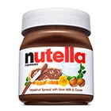
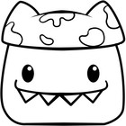
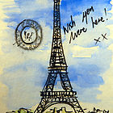

- Today
-

World Nutella Day - Today
World Nutella Day was created in 2007 when Sara Rosso, an American blogger living in Italy, thought that there were many days in the year but no day set aside to appreciate Nutella. Why not?
- Tomorrow
-
Working Naked Day
There appears to be a holiday for just about every concept under the sun, so should we be surprised that there is such a thing as Working Naked Day? As its name suggests, Working Naked Day is the day in which you carry out the day’s work unclothed.
-

Doodle Day
Release your inner artist on Doodle Day, a celebration of all those idle sketches you make while on the phone, or in boring meetings. These scrappy drawings are recognised each year on their very own day of celebration, so free your creative spirit and take a sketchpad to your next meeting!
- Saturday
-

Send a Card to a Friend Day
Everyone loves and appreciates their friends, and we all just assume that they know how much we care and that we are always thinking about them. Sadly, many of our friends will experience loneliness and feel under appreciated from time to time. That’s just how life goes. That’s why Send a Card to a Friend Day exists, and why year after year it is so popular!